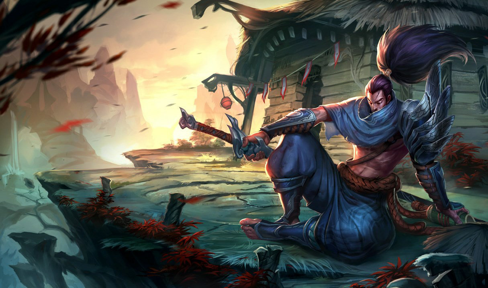

Jiabao Li
Computer science, graduated university of California riverside, 5 years working experience, I analyze the needs of the user, then design and develop software that meets those needs and recommend software upgrades for the client's existing programs and systems, design each part of the application or system, and plan how these parts work together, create various models and diagrams to show programmers the software code needed for an application, to ensure that the program continues to function properly through software maintenance and testing, to document every aspect of an application or system, as a reference for future maintenance and upgrades for software quality assurance, for new software create test plans, scenarios, and procedures, identify project risks and recommend steps to minimize those risks, conduct software testing using manual or automated procedures and exploratory testing, and evaluate results, document and report software defects or problems and report to software developers provide feedback on usability and functionality with stakeholders, I design the program, then work closely with the programmers who write the computer code and write the code myself, rather than instructing the programmers.
I check the software for problems, as part of testing, potential defects or risks to the software are recorded and tracked, after which I will typically evaluate its usability and functionality to identify possible difficulties users may encounter, and when testing is complete, I will report the results to the software or web developers and review the solution to any problems they find, after the program is released to customers, I do upgrades and maintenance, and as a qualified software designer, after the software is released and any upgrades or maintenance run manual and automated checks for bugs and usability issues.
When I was a game designer, I generally focused on a specific aspect of gameplay, and as a tester, I would code and see other people's mistakes firsthand. At the same time, I will work on the balance of the game and its rule system as a mechanism designer, and I will also assist the environment designer in creating different scenes and environments of the game. I go through millions of changes throughout my production, requiring thousands of lines of code to be constantly rechecked and recoded. I think I'm skilled enough for the job, designers can also be asked to develop a game that focuses on a specific aspect, such as marketing, design, technology or art, market driven games are designed to be profitable, so their advancement limited to consumer demand. Most games are developed this way. I'll be aware of this and take advantage of it, design-driven games allow the designer to take full control of the game and all its aspects. Due to funding constraints, many games are not developed this way. Technology-driven games are created to highlight technical achievements or to market consoles and engines, such as high-quality graphics monitors. Few games are art-driven, games focus on visual effects and impressive designs created by artists.
Experience
Coding
• Computer programming
• Line coding, in data storage
• Source coding, compression used in data transmission
Video Game Designer
• Coding visual elements
• Programming features
• Testing iterations
Education
University of California Riverside
Portfolio
